<div id="rightSideWrapper">

        <div class="content">
            <div class='chapter'>
                <div class='subChapter'>
                    <h1 class='hidden-title'>
                        <span class='subChapterTitle'>5.6 Der DK-Automat</span>
                    </h1>

                    <h2>Von der Grammatik \(\hat{G}\) zu einem nichtdeterministischen endlichen Automaten</h2>

                    <p>Um den \(LR(0)\)-Parser gemäß
                        <a href="./05-05-d-linker-Rand-und-Bluete.html#algorithm-LR-parser">Algorithmus 5.8.7</a>
                        zu implementieren, müssen wir den
                        Test \(\gamma \stackrel{?}\in \Front(G)\)
                        durchführen und,
                        falls die Antwort <em>ja</em> ist, die Blüte finden.
                        Dies gelingt uns, indem wir die Grammatik \(\hat{G}\)
                        in einen endlichen Automaten umwandeln.
                        <a href="./04-03-nfsm.html#regular-grammar-to-fsm">Theorem 4.3.8</a>
                        und die ihm vorhergehende Konstruktion zeigen, wie man das macht.
                        Anstatt allerdings das Theorem als "black box" zu verwenden, gehen
                        wir die Konstruktion
                        anhand zweier fiktiver Produktion $X \rightarrow aBcDe$ und $X \rightarrow uVw$
                        Schritt für Schritt durch.
                        Wir erkennen die Terminale $\Sigma = \{a,c,e,u,w\}$ und die Nichtterminale
                        $N = \{X,B,D,V\}$. In $\dk{G}$ sind
                        \{a,c,e,u,w,A,B,D,V\} alles Terminale, und die Nichtterminale
                        sind $\dk{N} = \{\dk{X}, \dk{B}, \dk{D}, \dk{V}\}.$
                        Die Produktionen von $\hat{G}$ sind
                        \begin{align*}
                        \dk{X} & \rightarrow a\dk{B} \\
                        \dk{X} & \rightarrow a\dkt{B}c\dk{D} \\
                        \dk{X} & \rightarrow a\dkt{B}c\dkt{D}e \\
                        & \\
                        \dk{X} & \rightarrow u\dk{V} \\
                        \dk{X} & \rightarrow u\dkt{V}w
                        \end{align*}
                    <p>
                        Diese übersetzen wir in einen verallgemeinert nichtdeterministischen Automaten,
                        bei dem jede Kante mit einem Wort $\beta \in (\Sigma \cup N)^*$, also aus <em>Terminalen</em>
                        der Grammatik $\dk{G}$ beschriftet ist:
                    </p>
                    <figure>
                        
                    </figure>
                    <p>
                        Wir brechen die Kanten in Stücke, so dass jede mit genau einem Zeichen beschriftet ist:
                    </p>
                    <figure>
                        
                    </figure>
                    <p>
                        Nochmal: jede Kante ist mit einem <em>Terminalsymbol</em> beschriftet. Die Symbole
                        $B, D, V$ sind <em>Terminale</em> in der Grammatik $\dk{G}$. Wenn wir $\epsilon$-Übergänge
                        zulassen,
                        können wir den Automaten übersichtlicher gestalten und mehrere Zustände zusammenfassen:
                    </p>
                    <figure>
                        
                    </figure>
                    <p>
                        Wir werden uns noch bessere Namen für die Zwischenzustände ausdenken. Wenn wir uns
                        an die Rechtsableitungsbäume mit Stamm, linkem Rand, Blüte und rechtem Rest erinnern,
                        dann haben die Zwischenzustände eine klare Bedeutung: der Zustand $4$ oben zum Beispiel
                        bedeutet, dass der Knoten $X$ im Stamm mit $a, B, c, D, e$ beschriftete Kinder hat
                        und wir uns bereits entschieden haben, dass $a$, $B$ und $c$ <em>Blätter</em> sein sollen,
                        also zum linken Rand gehören.
                        Der Übergang $\boxed{4} \step{D} \boxed{5}$ entspricht dann der Entscheidung,
                        auch $D$ zu einem Blatt zu machen, während $\boxed{4} \step{\epsilon} \dk{D}$ der
                        Entscheidung entspricht, $D$ zu einem Knoten im Stamm zu machen und eine $D$-Produktion
                        anzuwenden.
                        Die beiden $\epsilon$-Übergänge von $\dk{X}$ nach $\boxed{1}$ bzw. $\boxed{7}$
                        stellen einfach sicher, dass wir uns erst entscheiden, mit welcher
                        Produktion wir den Stammknoten $X$ expandieren, bevor wir weitermachen.
                        Daher nennen wir Zustand $\boxed{4}$ um in
                        $\boxed{X \rightarrow aBc.De}$, wobei der Punkt $.$ markiert, welchen Teil
                        der rechten Seite wir bereits gelesen haben.
                        Wir erhalten folgendes Bild:
                    </p>
                    <figure>
                        
                    </figure>


                    <h2>Die $a^{m+k}b^m$-Grammatik</h2>
                    <p>
                        Wir illustrieren obige Vorgehensweise nun
                        anhand der Grammatik</p>

                    <p id="the-grammar">
                        \begin{align*}
                        G & : \\
                        S & \rightarrow aS \\
                        S & \rightarrow B \\
                        B & \rightarrow aBb \\
                        B & \rightarrow ab
                        \end{align*}
                    </p>

                    <p>
                        Laut Gebrauchsanweisung aus dem letzten Teilkapitel hat die Grammatik
                        $\dk{G}$ die Terminalsymbole $\Sigma \cup N = \{a, b, S, B\}$ und
                        die Nichtterminale $\dk{N} = \{\dk{S}, \dk{B}\}$. Die Produktionen von
                        $\dk{G}$ ergeben sich wie folgt:
                    </p>

                    \begin{align*}
                    \begin{array}{l|l}
                    \textnormal{Produktion in $G$}
                    &
                    \textnormal{Produktion in $\hat{G}$} \\ \hline
                    %
                    %
                    S \rightarrow aS & {\dk{S}} \rightarrow \dkt{a} \dk{S}\\
                    & {\dk{S}} \rightarrow \dkt{a} \dkt{S}\\ \hline
                    %
                    S \rightarrow B & {\dk{S}} \rightarrow \dk{B}\\
                    & {\dk{S}} \rightarrow \dkt{B}\\ \hline
                    %
                    B \rightarrow aBb & {\dk{B}} \rightarrow \dkt{a}\dk{B}\\
                    &{\dk{B}} \rightarrow \dkt{a}\dkt{B}\dkt{b}\\ \hline
                    %
                    B \rightarrow ab & {\dk{B}} \rightarrow \dkt{ab}
                    \end{array}
                    \end{align*}

                    <p>In dieser Grammatik betrachten wir die Rechtsableitung
                    </p>
                    \begin{align*}
                    S \Step{} aS \Step{} aaS \Step{} aaB \Step{} aaaBb \Step{} aaaaBbb \Step{} aaaaaBbbb
                    \end{align*}
                    <p>
                        Es gilt $\front(aaaaaBbbb) = aaaaaBb$. In $\hat{G}$ entspricht die obige
                        Rechtsableitung der Ableitung
                    </p>
                    \begin{align*}
                    \hat{S} \Step{} a\hat{S} \Step{} aa\hat{S} \Step{} aa\hat{B}
                    \Step{} aaa\hat{B} \Step{} aaaaBb
                    \end{align*}


                    <p>
                        Den nichtdeterministischen DK-Automaten (mit $\epsilon$-Übergängen) können wir
                        nun Schritt für Schritt zeichnen:
                    </p>

                    <figure class='centered-figure well container'>
                        <a class='left carousel-control-prev-icon' href='#aaabb-dk-nea' data-slide='prev'>
                            <div class='carousel-nav-icon'>
                                
                            </div>
                        </a>
                        <a class='right carousel-control-next-icon' href='#aaabb-dk-nea' data-slide='next'>
                            <div class='carousel-nav-icon'>
                                
                            </div>
                        </a>
                        <div id='aaabb-dk-nea' class='carousel' data-interval='false' style='display:inline-block'>
                            <ol class='carousel-indicators'>
                                <li data-target='#aaabb-dk-nea' data-slide-to='1' class='active'></li>
                                <li data-target='#aaabb-dk-nea' data-slide-to='2'></li>
                                <li data-target='#aaabb-dk-nea' data-slide-to='3'></li>
                                <li data-target='#aaabb-dk-nea' data-slide-to='4'></li>
                                <li data-target='#aaabb-dk-nea' data-slide-to='5'></li>
                                <li data-target='#aaabb-dk-nea' data-slide-to='6'></li>
                                <li data-target='#aaabb-dk-nea' data-slide-to='7'></li>
                                <li data-target='#aaabb-dk-nea' data-slide-to='8'></li>
                                <li data-target='#aaabb-dk-nea' data-slide-to='9'></li>
                                <li data-target='#aaabb-dk-nea' data-slide-to='10'></li>
                                <li data-target='#aaabb-dk-nea' data-slide-to='11'></li>
                            </ol>
                            <div class='carousel-inner' style='display:inline-block'>
                                <div class='item active'></div>
                                <div class='item'></div>
                                <div class='item'></div>
                                <div class='item'></div>
                                <div class='item'></div>
                                <div class='item'></div>
                                <div class='item'></div>
                                <div class='item'></div>
                                <div class='item'></div>
                                <div class='item'></div>
                                <div class='item'></div>
                            </div class='carousel-inner'>
                        </div class='carousel'>
                    </figure>

                    <!--
                    <p>
                        \begin{align*}
                        G & : \\
                        S & \rightarrow AB \\
                        A & \rightarrow xBS \ | \ Bz \\
                        B & \rightarrow yAS \ | \ Az \ | \ x \ | \ y \ | \ z
                        \end{align*}
                        Warnung: dies ist <em>keine</em> LR(0)-Grammatik, wie wir bald sehen werden.
                        Die Grammatik \(\hat{G}\) und der DK-Automaten aber können für <em>alle</em>
                        kontextfreien Grammatiken \(G\) konstruiert werden, ob LR(0) oder nicht.
                        Die erste Beobachtung ist, dass unsere Grammatik \(\hat{G}\) keine
                        reguläre Grammatik im strengen Sinne ist - sie ist eine <em>erweiterte</em>
                        reguläre Grammatik. Eine \(G\)-Produktion wie beispielsweise
                        \(A \rightarrow yAS\) erzeugt drei \(\hat{G}\)-Produktionen:
                        \begin{align*}
                        \dk{A} & \rightarrow y \hat{A} \\
                        \dk{A} & \rightarrow y A \hat{S} \\
                        \dk{A} & \rightarrow y A S \\
                        \end{align*}
                        Die zweite und dritte Produktion erzeugen mehr als ein Terminal in <em>einem</em>
                        Schritt. Das ist streng genommen nicht erlaubt. Wir können es aber
                        leicht in eine "richtige" reguläre Grammatik überführen, in dem wir
                        Plathalter-Nichtterminale einführen.
                        So ähnlich ist dann auch tatsächlich die DK-Grammatik definiert,
                        nur dass sie ein paar Dinge expliziter macht.
                        In der DK-Grammatik wird die \(G\)-Produktion \(A \rightarrow yAS\)
                        zu folgenden Produktionen:
                    </p>

                    \begin{align*}
                    \hat{A} & \rightarrow \boxed{A \rightarrow \text{.}yAS} \tag{wir entscheiden uns für eine
                    $A$-Produktion} \\
                    \boxed{A \rightarrow \text{.}yAS} & \rightarrow y\ \boxed{A \rightarrow y\text{.}AS} \tag{\(y\) wird
                    ein Blatt} \\
                    \boxed{A \rightarrow y\text{.}AS} & \rightarrow \hat{A} \tag{\(A\) kommt in den Stamm, \(S\) in den
                    rechten Rand} \\
                    \boxed{A \rightarrow y \text{.}AS} & \rightarrow A\ \boxed{A \rightarrow yA\text{.}S} \tag{\(A\)
                    wird ein Blatt} \\
                    \boxed{A \rightarrow yA\text{.}S} & \rightarrow \hat{S} \tag{\(S\) kommt in den Stamm} \\
                    \boxed{A \rightarrow yA \text{.}S} & \rightarrow S\ \boxed{A \rightarrow yAS\text{.}} \tag{\(S\)
                    wird ein Blatt, und $yAS$ ist somit die Blüte} \\
                    \end{align*}

                    <p>
                        Hier sehen Sie, wie ich schrittweise einen linken Rand mit Blüte
                        aufbaue und parallel dazu dieses Wort mit der DK-Grammatik ableite.
                    </p>

                    <figure class='centered-figure well container'>
                        <a class='left carousel-control-prev-icon' href='#dk-grammar' data-slide='prev'>
                            <div class='carousel-nav-icon'>
                                
                            </div>
                        </a>
                        <a class='right carousel-control-next-icon' href='#dk-grammar' data-slide='next'>
                            <div class='carousel-nav-icon'>
                                
                            </div>
                        </a>
                        <div id='dk-grammar' class='carousel' data-interval='false' style='display:inline-block'>
                            <ol class='carousel-indicators'>
                                <li data-target='#dk-grammar' data-slide-to='1' class='active'></li>
                                <li data-target='#dk-grammar' data-slide-to='2'></li>
                                <li data-target='#dk-grammar' data-slide-to='3'></li>
                                <li data-target='#dk-grammar' data-slide-to='4'></li>
                                <li data-target='#dk-grammar' data-slide-to='5'></li>
                                <li data-target='#dk-grammar' data-slide-to='6'></li>
                                <li data-target='#dk-grammar' data-slide-to='7'></li>
                                <li data-target='#dk-grammar' data-slide-to='8'></li>
                                <li data-target='#dk-grammar' data-slide-to='9'></li>
                                <li data-target='#dk-grammar' data-slide-to='10'></li>
                                <li data-target='#dk-grammar' data-slide-to='11'></li>
                                <li data-target='#dk-grammar' data-slide-to='12'></li>
                                <li data-target='#dk-grammar' data-slide-to='13'></li>
                            </ol>
                            <div class='carousel-inner' style='display:inline-block'>
                                <div class='item active'>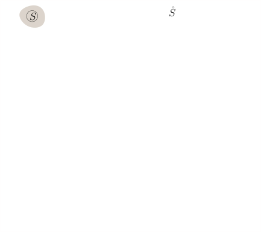</div>
                                <div class='item'>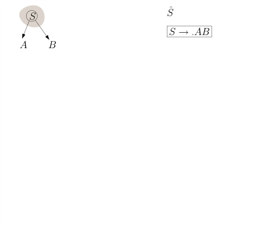</div>
                                <div class='item'>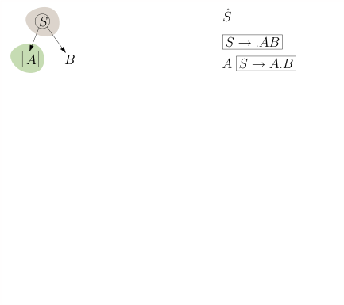</div>
                                <div class='item'>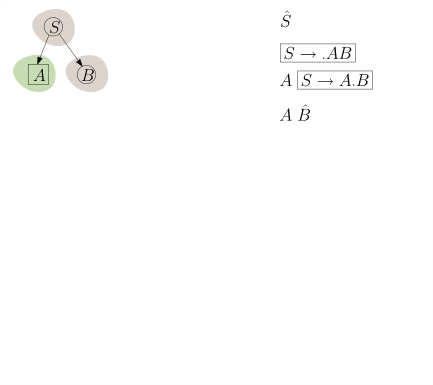</div>
                                <div class='item'></div>
                                <div class='item'>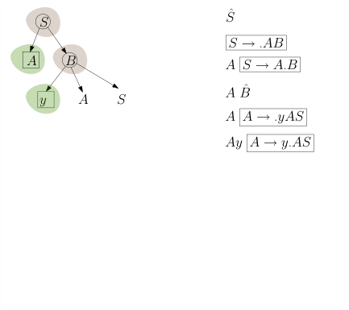</div>
                                <div class='item'></div>
                                <div class='item'>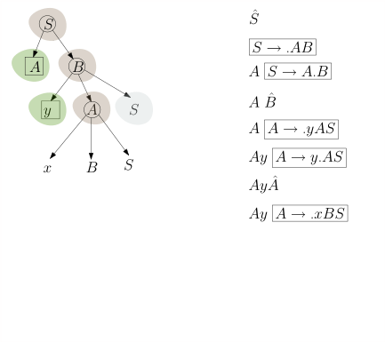</div>
                                <div class='item'>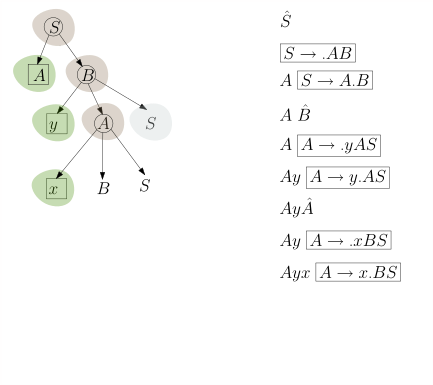</div>
                                <div class='item'>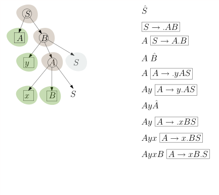</div>
                                <div class='item'></div>
                                <div class='item'>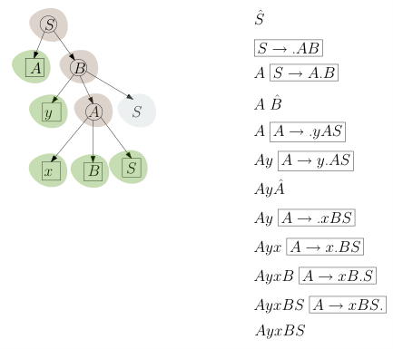</div>
                                <div class='item'>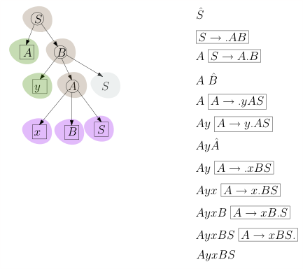</div>
                            </div class='carousel-inner'>
                        </div class='carousel'>
                    </figure>

                    <p>Jetzt baue ich einen nichtdeterministischen endlichen Automaten mit
                        \(\epsilon\)-Übergängen für diese Grammatik:
                    </p>
                    <figure class='centered-figure well container'>
                        <a class='left carousel-control-prev-icon' href='#dk-automaton-3' data-slide='prev'>
                            <div class='carousel-nav-icon'>
                                
                            </div>
                        </a>
                        <a class='right carousel-control-next-icon' href='#dk-automaton-3' data-slide='next'>
                            <div class='carousel-nav-icon'>
                                
                            </div>
                        </a>
                        <div id='dk-automaton-3' class='carousel' data-interval='false' style='display:inline-block'>
                            <ol class='carousel-indicators'>
                                <li data-target='#dk-automaton-3' data-slide-to='1' class='active'></li>
                                <li data-target='#dk-automaton-3' data-slide-to='2'></li>
                                <li data-target='#dk-automaton-3' data-slide-to='3'></li>
                                <li data-target='#dk-automaton-3' data-slide-to='4'></li>
                                <li data-target='#dk-automaton-3' data-slide-to='5'></li>
                                <li data-target='#dk-automaton-3' data-slide-to='6'></li>
                                <li data-target='#dk-automaton-3' data-slide-to='7'></li>
                                <li data-target='#dk-automaton-3' data-slide-to='8'></li>
                                <li data-target='#dk-automaton-3' data-slide-to='9'></li>
                                <li data-target='#dk-automaton-3' data-slide-to='10'></li>
                                <li data-target='#dk-automaton-3' data-slide-to='11'></li>
                                <li data-target='#dk-automaton-3' data-slide-to='12'></li>
                                <li data-target='#dk-automaton-3' data-slide-to='13'></li>
                                <li data-target='#dk-automaton-3' data-slide-to='14'></li>
                                <li data-target='#dk-automaton-3' data-slide-to='15'></li>
                                <li data-target='#dk-automaton-3' data-slide-to='16'></li>
                            </ol>
                            <div class='carousel-inner' style='display:inline-block'>
                                <div class='item active'></div>
                                <div class='item'></div>
                                <div class='item'></div>
                                <div class='item'></div>
                                <div class='item'></div>
                                <div class='item'></div>
                                <div class='item'></div>
                                <div class='item'></div>
                                <div class='item'></div>
                                <div class='item'></div>
                                <div class='item'></div>
                                <div class='item'></div>
                                <div class='item'></div>
                                <div class='item'></div>
                                <div class='item'></div>
                                <div class='item'></div>
                            </div class='carousel-inner'>
                        </div class='carousel'>
                    </figure>

                -->


                    <h2>
                        Der nichtdeterministische DK-Automat
                    </h2>

                    <div class='well container theorem'>
                        <p><span class='numbered-title'>Definition</span> Für eine kontextfreie
                            Grammatik ist der nichtdeterministische DK-Automat (NDK-Automat) ein nichtdeterministischer
                            endlicher
                            Automat mit $\epsilon$-Übergängen, den wir wie folgt konstruieren:</p>
                        <ol>
                            <li>Für jede Produktion $X \rightarrow \beta$ gibt es einen
                                Zustandsübergang $\boxed{X} \step{\epsilon} \boxed{X \step{} . \beta}$
                            </li>
                            <li>
                                Für jede Zerlegung $\beta = \beta_1 \sigma \beta_2$ gibt es den Zustandsübergang
                                $\boxed{X \step{} \beta_1 . \sigma \beta_2} \step{\sigma}
                                \boxed{X \step{} \beta_1 \sigma . \beta_2}$
                            </li>
                            <li>Falls $\sigma$ ein Nichtterminal $Y$ ist, also $\beta = \beta_1 Y \beta_2$, gibt
                                es zusätzlich noch den Übergang
                                $\boxed{X \step{} \beta_1 . Y \beta_2} \step{\epsilon} \boxed{Y}$
                            </li>
                        </ol>
                        <p>
                            Die Interpretation dieser Übergänge in Rechtsableitungsbaum-Begriffen ist:
                            (1) heißt, dass $\boxed{X}$ ein Stammknoten ist und wir ihn anhand der Regel
                            $X \rightarrow \beta$ expandieren; wir erschaffen also Kinder, die mit den
                            Symbolen von $\beta$ beschriftet sind. (2) heißt, dass wir uns bereits
                            entschieden haben, die Kinder $\beta_1$ von $\boxed{X}$ nicht zu expandieren, sie
                            also zum linken Rand werden zu lassen, und diese Entscheidung nun auch
                            für das Symbol $\sigma$ treffen; (3) bedeutet, dass wir uns entschließen $\sigma$ (das hier
                            ein Nichtterminal $Y$ ist) weiter zu expandieren, es also nicht dem linken Rand
                            zuordnen, sondern zu einem Stammknoten werden lassen, uns aber noch nicht
                            entschlossen haben, welche Produktion $Y \rightarrow ?$ wir anwenden wollen.
                        </p>
                        <p>
                            Der Startzustand ist $\boxed{S}$. Jeder Zustand der Form $\boxed{X \step{} \beta .}$ ist
                            ein akzeptierender Zustand.
                        </p>
                    </div class='well container theorem'>


                    <h2>Den NDK-Automaten deterministisch machen</h3>

                        <p>
                            Wir wissen ja bereits, wie man einen nichtdeterministischen Automaten
                            deterministisch macht: die
                            <a href="./04-03-nfsm.html#nfsm-to-fsm">Potenzmengenkonstruktion
                                aus Kapitel 4.3</a>. Hier können wir diese leider nicht direkt anwenden,
                            da der obige Automat \(\epsilon\)-Übergänge hat. Wie geht das also nun?
                            Im deterministischen Automaten ist wie bei der Potenzmengenkonstruktion
                            jeder Zustand eine <em>Menge</em> \(R\) von Zuständen des nichtdeterministischen
                            Automaten. Wenn wir nun in eine solche Menge \(R\) einen Zustand \(q\) einfügen,
                            dann fügen wir auch alle Zustände \(q'\) hinzu, zu denen es einen
                            \(\epsilon\)-Übergang \(q \step{\epsilon} q'\) gibt.
                            Für den obigen nichtdeterministischen Automaten sieht das dann so aus:
                        </p>

                        <figure class='centered-figure well container'>
                            <a class='left carousel-control-prev-icon' href='#aaabb-dk-dea' data-slide='prev'>
                                <div class='carousel-nav-icon'>
                                    
                                </div>
                            </a>
                            <a class='right carousel-control-next-icon' href='#aaabb-dk-dea' data-slide='next'>
                                <div class='carousel-nav-icon'>
                                    
                                </div>
                            </a>
                            <div id='aaabb-dk-dea' class='carousel' data-interval='false' style='display:inline-block'>
                                <ol class='carousel-indicators'>
                                    <li data-target='#aaabb-dk-dea' data-slide-to='1' class='active'></li>
                                    <li data-target='#aaabb-dk-dea' data-slide-to='2'></li>
                                    <li data-target='#aaabb-dk-dea' data-slide-to='3'></li>
                                    <li data-target='#aaabb-dk-dea' data-slide-to='4'></li>
                                    <li data-target='#aaabb-dk-dea' data-slide-to='5'></li>
                                    <li data-target='#aaabb-dk-dea' data-slide-to='6'></li>
                                    <li data-target='#aaabb-dk-dea' data-slide-to='7'></li>
                                    <li data-target='#aaabb-dk-dea' data-slide-to='8'></li>
                                    <li data-target='#aaabb-dk-dea' data-slide-to='9'></li>
                                    <li data-target='#aaabb-dk-dea' data-slide-to='10'></li>
                                    <li data-target='#aaabb-dk-dea' data-slide-to='11'></li>
                                    <li data-target='#aaabb-dk-dea' data-slide-to='12'></li>
                                    <li data-target='#aaabb-dk-dea' data-slide-to='13'></li>
                                    <li data-target='#aaabb-dk-dea' data-slide-to='14'></li>
                                    <li data-target='#aaabb-dk-dea' data-slide-to='15'></li>
                                    <li data-target='#aaabb-dk-dea' data-slide-to='16'></li>
                                    <li data-target='#aaabb-dk-dea' data-slide-to='17'></li>
                                    <li data-target='#aaabb-dk-dea' data-slide-to='18'></li>
                                    <li data-target='#aaabb-dk-dea' data-slide-to='19'></li>
                                    <li data-target='#aaabb-dk-dea' data-slide-to='20'></li>
                                    <li data-target='#aaabb-dk-dea' data-slide-to='21'></li>
                                </ol>
                                <div class='carousel-inner' style='display:inline-block'>
                                    <div class='item active'>
                                        <p>
                                            <caption>Der NDK-Automat</caption>
                                        </p>
                                    </div>
                                    <div class='item'>
                                        <p>
                                            <caption>Der Anfangszustand $\{S\}$</caption>
                                        </p>
                                    </div>
                                    <div class='item'>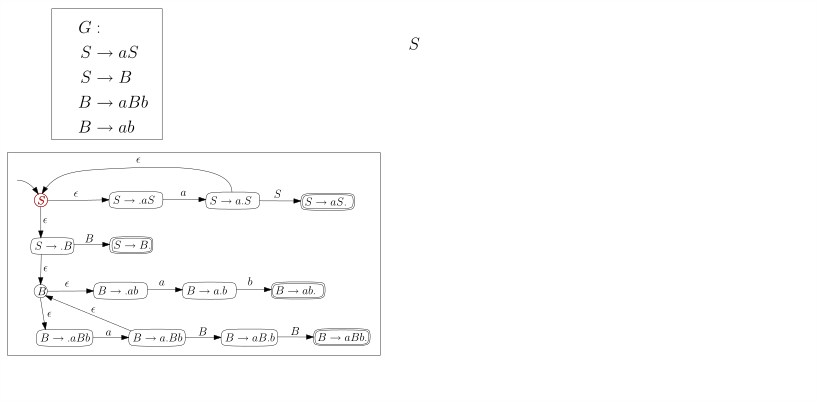
                                        <p>
                                            <caption>Wir fügen alle Zustände hinzu, die wir per $\epsilon$-Kanten
                                                erreichen können.
                                            </caption>
                                        </p>
                                    </div>
                                    <div class='item'>
                                        <p>
                                            <caption>Wir fügen alle Zustände hinzu, die wir per $\epsilon$-Kanten
                                                erreichen können.
                                            </caption>
                                        </p>
                                    </div>
                                    <div class='item'>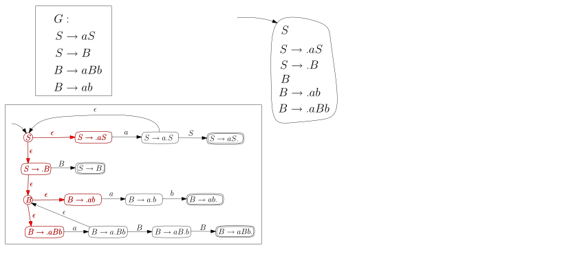
                                        <p>
                                            <caption>Wir fügen alle Zustände hinzu, die wir per $\epsilon$-Kanten
                                                erreichen können.
                                            </caption>
                                        </p>
                                    </div>
                                    <div class='item'>
                                        <p>
                                            <caption>Dann gehen wir wie gewohnt vor. Nur
                                                einer der fünf Zustände in unserem Korb hat einen
                                                $\step{B}$-Übergang. Dies ist ein
                                                akzeptierender Zustand.
                                            </caption>
                                        </p>
                                    </div>
                                    <div class='item'>
                                        <p>
                                            <caption>Alle diese haben einen $\step{a}$-Übergang.
                                            </caption>
                                        </p>
                                    </div>
                                    <div class='item'>
                                        <p>
                                            <caption>Die $\step{a}$-Übergänge führen hierhin.
                                            </caption>
                                        </p>
                                    </div>
                                    <div class='item'>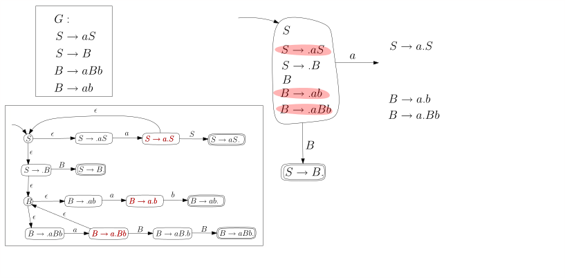
                                        <p>
                                            <caption>Die $\step{a}$-Übergänge führen hierhin.
                                            </caption>
                                        </p>
                                    </div>
                                    <div class='item'>
                                        <p>
                                            <caption>Die $\step{a}$-Übergänge führen hierhin. Und
                                                per $\epsilon$-Übergängen auch hierhin.
                                            </caption>
                                        </p>
                                    </div>
                                    <div class='item'>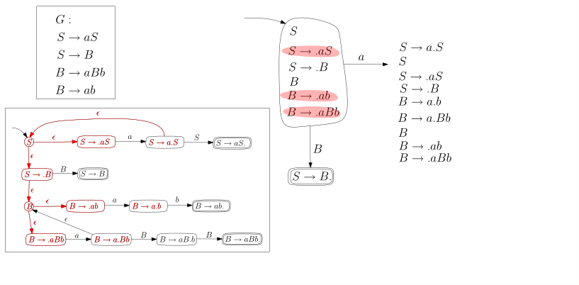
                                        <p>
                                            <caption>Die $\step{a}$-Übergänge führen hierhin. Und
                                                per $\epsilon$-Übergängen auch hierhin.
                                            </caption>
                                        </p>
                                    </div>
                                    <div class='item'>
                                        <p>
                                            <caption>Jetzt ist der Zustand fertig.
                                            </caption>
                                        </p>
                                    </div>
                                    <div class='item'></div>
                                    <div class='item'></div>
                                    <div class='item'></div>
                                    <div class='item'>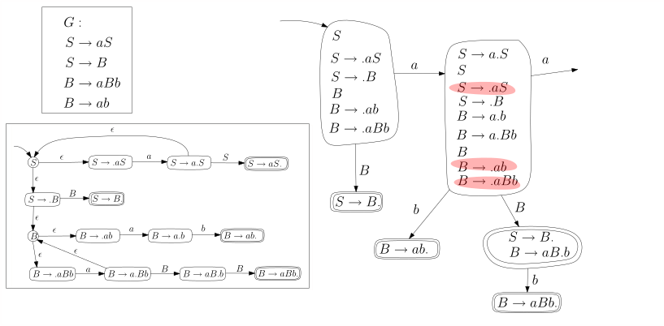
                                        <p>
                                            <caption>Wieder haben drei Zustände einen $\step{a}$-Übergang.
                                            </caption>
                                        </p>

                                    </div>
                                    <div class='item'>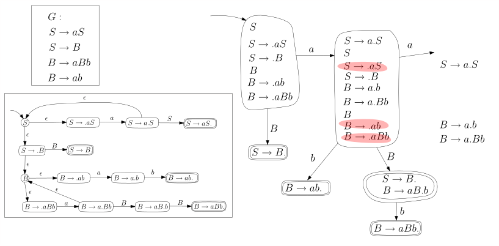
                                        <p>
                                            <caption>Wieder haben drei Zustände einen $\step{a}$-Übergang.
                                            </caption>
                                        </p>
                                    </div>
                                    <div class='item'>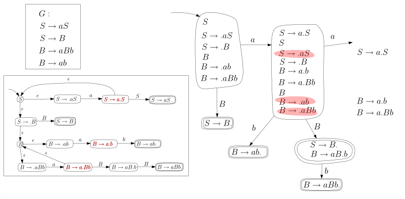
                                        <p>
                                            <caption>Wieder haben drei Zustände einen $\step{a}$-Übergang.
                                            </caption>
                                        </p>
                                    </div>
                                    <div class='item'>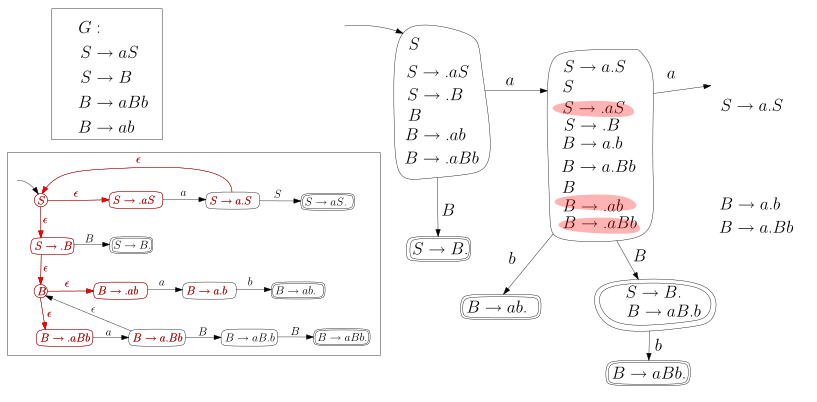
                                        <p>
                                            <caption>Per $\epsilon$-Abschluss erhalten wir diese Menge.
                                            </caption>
                                        </p>
                                    </div>
                                    <div class='item'>
                                        <p>
                                            <caption>Per $\epsilon$-Abschluss erhalten wir diese Menge. Sie ist
                                                mit der daneben identisch. Wir ersetzen es also durch eine
                                                Selbstschleife.
                                            </caption>
                                        </p>
                                    </div>
                                    <div class='item'>
                                        <p>
                                            <caption>Per $\epsilon$-Abschluss erhalten wir diese Menge. Sie ist
                                                mit der daneben identisch. Wir ersetzen es also durch eine
                                                Selbstschleife.
                                            </caption>
                                        </p>
                                    </div>
                                    <div class='item'>
                                        <p>
                                            <caption>Noch ein Ausgang $\step{S}$. Der Automat ist fertig.
                                            </caption>
                                        </p>
                                    </div>
                                </div class='carousel-inner'>
                            </div class='carousel'>
                        </figure>

                        <p>
                            Und hier nochmal das Endergebnis, wobei wir die Zustände im DK-Automaten durchnummeriert
                            haben:
                        </p>
                        <figure>
                            
                        </figure>
                        <p>Streng genommen ist das Ergebnis kein deterministischer Automat, da zum Beispiel der
                            Startzustand keinen $b$-Übergang hat.
                            Die Zustandsübergangsfunktion $\delta: Q \times \Sigma \rightarrow Q$ ist gar keine
                            Funktion, sondern eine <em>partielle</em> Funktion, da
                            $\delta(q,\sigma)$ für manche Eingabewerte undefiniert ist.
                            Wir verwenden aber die Konvention, dass
                            der Automat in diesem Falle in einen Todeszustand wechselt, aus dem er
                            nicht wieder herauskommt und der nicht akzeptierend ist. Dies ist übersichtlicher,
                            als überall Todeskanten hinzuzufügen.
                        </p>


                        <h2>Den DK-Automaten verwenden</h2>

                        <p>
                            Wie verwenden wir jetzt den DK-Automaten? In jedem Parser-Schritt füttern wir den
                            DK-Automaten mit dem Stack-Inhalt.
                            Landet der Automat auf einem nichtaktzeptierenden Zustand, müssen wir ein weiteres Zeichen
                            lesen, d.h. auf den
                            Stack legen. Landet er auf einem akzeptierenden Zustand, so enthält dieser ein
                            $\boxed{X \rightarrow \beta.}$ und wir reduzieren per $\beta \rstep{} X$. Nehmen
                            wir $aaabb$ als Beispiel:
                        </p>
                        \begin{align*}
                        DK: \boxed{1} \step{a} \boxed{3} \step{a} \boxed{3}\step{a} \boxed{3} \step{b} \boxed{4}
                        \end{align*}
                        <p>
                            erst nach vier Zeichen landet der Automat in dem akzeptierenden Zustand $\boxed{4}$. Wir
                            reduzieren
                            per $ab \rstep{} B$; nun liegt $aaB$ auf dem Stack. Wir füttern das dem DK-Automaten:
                        </p>
                        \begin{align*}
                        DK: \boxed{1} \step{a} \boxed{3} \step{a} \boxed{3} \step{B} \boxed{5}
                        \end{align*}
                        <p>
                            Wir landen in dem akzeptierenden Zustand $\boxed{5}$ und reduzieren per $B \rstep{} S$.
                            Der Stack ist nun $aaS$. Das bringt uns nach
                        </p>
                        \begin{align*}
                        \boxed{1} \step{a} \boxed{3} \step{a} \boxed{3} \step{S} \boxed{7}
                        \end{align*}
                        <p>
                            und wir reduzieren per $aS \rstep S$; der Stack ist nun $aS$; jetzt wiederholt sich der
                            letzte Schritt,
                            wir reduzieren noch einmal per $aS \rstep{} S$, und nun liegt $S$ auf dem Stack. Das
                            Eingabewort
                            ist noch nicht vollständig gelesen: das zweite $b$ fehlt noch. Wenn wir allerdings $S$ dem
                            DK-Automaten füttern, landet der im Todeszustand und weiß nicht mehr weiter. Der
                            Parse-Vorgang
                            ist fehlgeschlagen. Was ist passiert?
                        </p>
                        <p>
                            Der Knackpunkt liegt bei Zustand $\boxed{5}$. Dieser suggiert eine Reduktion $B \rstep{} S$.
                            Allerdings
                            wäre es auch möglich, ein weiteres Zeichen zu lesen (falls dies $b$ ist) und in Zustand
                            $\boxed{6}$ zu landen.
                            Sehen Sie: unser Parser hat im zweiten Schritt
                        </p>
                        \begin{align*}
                        aaB\textcolor{darkgrey}b \rstep{} aaS\textcolor{darkgrey}b
                        \end{align*}
                        <p>reduziert, was kein korrekter Linksreduktionsschritt ist, weil $aaSb$ keine gültige Wortform
                            ist.
                            Wenn das $\textcolor{darkgrey}b$ aber nicht da wäre, wäre
                        </p>
                        \begin{align*}
                        aaB \rstep{} aS
                        \end{align*}
                        <p>
                            korrekt. Wir sehen also: $aaBw \rstep{} aSw$ ist ein korrekter Schritt für
                            $w = \epsilon$, aber nicht für $w = b$, obwohl $aaBb$ selbst eine gültige Wortform ist.
                            Die Grammatik verletzt also die LR(0)-Bedingung aus <a
                                href="05-05-c-LR-grammars.html#def-LR0">Definition 5.7.4</a>. Die Korrektheit
                            eines Linksreduktionsschritts $\alpha \beta w \rstep{} \alpha X w$ kann also ohne Kenntnis
                            von $w$ gar nicht
                            sichergestellt werden.
                        </p>

                        <h3>Die Grammatik abändern: Stopper-Zeichen am Schluss</h3>

                        <p>
                            In diesem Fall lässt sich das Dilemma flicken, indem wir ein Stopperzeichen am
                            Ende einfügen. Wir ändern die Grammatik leicht ab:
                        </p>
                        \begin{align*}
                        G_z & : \\
                        S & \rightarrow aS \\
                        S & \rightarrow Bz \\
                        B & \rightarrow aBb \\
                        B & \rightarrow ab
                        \end{align*}
                        <p>
                            Es gilt also $L(G_z) = L(G) \circ \{z\}$, wir hängen also jedem $G$-Wort ein $z$ an. Wie
                            sieht der NDK- und der DK-Automat aus?
                        </p>
                        <figure>
                            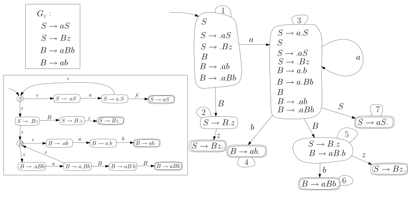
                        </figure>
                        <p>
                            Das $z$ verhindert, dass der Parser verfrüht $B \rstep{} S$ reduziert und zwingt ihn, damit
                            zu warten, bis das Ende des Inputs erreicht ist. Wenn wir den Automaten betrachten, sehen
                            wir, dass
                            kein akzeptierender Zustand eine ausgehende Kante hat: wenn also $\gamma \in \Front(G_z)$
                            ist, dann
                            gibt es kein $\gamma \gamma_1 \in \Front(G_z)$ mit $|\gamma_1| \gt 0$. In anderen Worten:
                            die Sprache $\Front(G_z)$ ist präfixfrei. Es kann also keinen Zweifel geben, dass
                            bei Erreichen eines akzeptierenden Zustandes reduziert werden muss.

                        </p>

                        <h2>Die Klammern-Grammatik</h2>

                        <p>
                            Als nächstes Beispiel schauen wir uns eine Grammatik an, die die wohlgeformten
                            Klammerausdrücke generiert:
                        </p>
                        \begin{align*}
                        G_{()} & : \\
                        S & \rightarrow \epsilon \\
                        S & \rightarrow S(S)
                        \end{align*}
                        <p>
                            mit den Terminalen $\{(,)\}$ und dem einen Nichtterminal $S$. Diese Grammatik
                            hat mit $S \rightarrow \epsilon$ die gewöhnungsbedürftige Eigenschaft, dass der
                            Reduktionsschritt $w \rstep{} S w$ <em>immer</em> technisch möglich wäre (wenn auch nicht
                            immer korrekt). NDK- und DK-Automat sind schnell gezeichnet:
                        </p>
                        <figure>
                            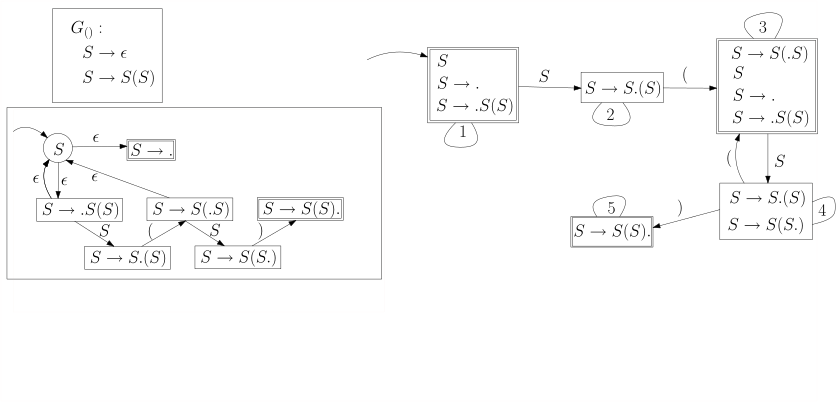
                        </figure>
                        <p>
                            Auch in diesem Automaten haben akzeptierende Zustände ausgehende Kanten, die zu weiteren
                            akzeptierenden Zuständen führen. Somit ist $\Front(G_{()})$ auch nicht präfixfrei. In der
                            Tat sind
                        </p>
                        \begin{align*}
                        \epsilon, S(, S(S(, S(S(S)
                        \end{align*}
                        <p>
                            alles Wörter in $\Front(G_{()})$. Das ist in diesem Kontext aber nicht schlimm:
                            wenn wir entscheiden wollen, ob
                        </p>
                        \begin{align*}
                        \alpha \beta \textcolor{darkgrey}{w} \rstep{} \alpha X \textcolor{darkgrey}{w}
                        \end{align*}
                        <p>
                            ein gültiger Linksreduktionsschritt ist, dann kennen wir $w$ zwar noch nicht, wissen
                            aber, dass $w \in \Sigma^*$ gilt, da $w$ ja der ungelesene Teil des Eingabewortes ist;
                            insbesondere kann das erste Zeichen von $w$
                            kein Nichtterminal sein. Insofern können wir dem DK-Automaten für $G_{()}$ trauen: wenn er
                            uns in einen akzeptierenden Zustand führt, können wir reduzieren.
                        </p>
                        <div class='well well-lg numbered-exercise container'>
                            <p><span class='numbered-title'>Übungsaufgabe</span>
                                Lassen Sie den LR-Parser auf $(()())()$ laufen und protokollieren Sie Stackinhalt und
                                Zustand des DK-Automaten.
                            </p>
                        </div class='numbered-exercise'>

                        <div class='well well-lg numbered-exercise container'>
                            <p><span class='numbered-title'>Übungsaufgabe</span>
                                Zeichnen Sie NDK-Automaten und DK-Automaten für die Grammatik
                            </p>
                            \begin{align*}
                            S & \rightarrow \epsilon \\
                            S & \rightarrow S(S)
                            \end{align*}
                            <p>
                                und zeigen Sie, dass diese <em>nicht</em> LR(0) ist. Finden Sie
                                also eine Produktion $X
                                \rightarrow \beta$ und gültige Wortformen $\alpha \beta w$ und $\alpha \beta w'$,
                                so dass $\alpha X w$ gültig ist, nicht aber $\alpha X w'$.
                            </p>
                        </div class='numbered-exercise'>


                        <div class='well well-lg numbered-exercise container'>
                            <p><span class='numbered-title'>Übungsaufgabe</span>
                                Untersuchen Sie unsere Arithmetik-Grammatik:
                            </p>
                            \begin{align*}
                            E & \rightarrow (E+E) \\
                            E & \rightarrow (E*E) \\
                            E & \rightarrow N \\
                            N & \rightarrow D \\
                            N & \rightarrow ND \\
                            D & \rightarrow 0 \ | \ 1 \ | \ 2 \ | \ 3 \ | \ 4 \ | \ 5 \ | \ 6 \ | \ 7 \ | \ 8 \ | \ 9
                            \end{align*}
                            <p>
                                Zeichnen Sie NDK- und DK-Automaten und zeigen Sie, dass die Grammatik nicht LR(0) ist.
                            </p>

                            <p><strong>Challenge.</strong> Fügen wir den arithmetischen Ausdrücken noch ein
                                Schlusszeichen $;$ hinzu, also $(2+(4*3));$ statt $(2+(4*3))$. Wenn wir obige Grammatik
                                um die Regel $S \rightarrow E;$ ergänzen und $S$ zum Startsymbol machen, ist sie dann
                                LR(0)? Wenn nicht: können Sie die Grammatik umschreiben
                                (also eine äquivalente, d.h. die gleiche Sprache
                                produzierende Grammatik angeben), so dass sie LR(0) wird?
                            </p>
                        </div class='numbered-exercise'>


                        <h2>Der DK-Test</h2>

                        <p>Wir beschreiben nun, wie man algorithmisch testet, ob eine gegebene Grammatik die
                            LR(0)-Bedingungen erfüllt. </p>

                        <!--
                            <p>Hier noch einmal zur Referenz, allerdings etwas knapper: </p>
                        <div class='well container theorem' id="def-LR0">
                            <span class='numbered-title'>Definition</span>
                            <strong>(\(LR(0)\)-Grammatiken)</strong>
                            Eine kontextfreie Grammatik heißt \(LR(0)\)-Grammatik,
                            wenn keiner der obigen schlechten Fälle eintritt.
                            Formal, wenn (1) die Grammatik eindeutig ist und (2) wenn ein
                            korrekter Linksreduktionsschritt
                            \begin{align*}
                            \alpha \beta w \rstep{} \alpha X w
                            \end{align*}
                            bedeutet, dass auch alle anderen Linksreduktionsschritte
                            \begin{align*}
                            \alpha \beta w' \rstep{} \alpha X w'
                            \end{align*}
                            korrekt sind, sofern $w' \in \Sigma^*$ ist und \(\alpha \beta w'\) selbst eine gültige
                            Wortform ist.
                        </div class='well container theorem'>
                        <p>
                            Im Folgenden wird es hilfreicher sein, die Definition zu negieren, also was es heißt, dass
                            eine
                            Grammatik <em>nicht</em> LR(0) ist.
                        </p>
                        <div class='well container theorem'>
                            <p><span class='numbered-title'>Beobachtung</span> <strong>(Kontrapositiv der
                                    Definition).</strong> Eine
                                Grammatik $G$ ist nicht LR(0) genau dann, wenn sie
                            <ul>
                                <li>($\neg$ LR.1) nicht eindeutig ist oder</li>
                                <li>($\neg$ LR.2) es eine Produktion $X \rightarrow \beta$ und gültige Wortformen
                                    $\alpha Xw$, $\alpha\beta w'$ (mit $w, w' \in \Sigma^*)$ gibt, so dass $\alpha Xw'$
                                    nicht gültig ist.</li>
                            </ul>
                        </div class='well container theorem'>

-->
                        <div class='well container theorem'>
                            <p><span class='numbered-title'>Theroem</span> <strong>(DK-Test).</strong> Sei $G$ eine
                                kontextfreie
                                Grammatik ohne nutzlose Nichtterminale und
                                <script src=""></script>ei $M$ der
                                DK-Automat für
                                die Grammatik $G$. Die Grammatik $G$ ist LR(0) genau dann, wenn folgende zwei
                                Bedingungen gelten:
                            </p>
                            <ul>
                                <li>
                                    (DK.1) Ein akzeptierender Zustand von $M$ (der ja eine Menge von Zuständen des
                                    NDK-Automaten ist) enthält
                                    genau einen akzeptierenden NDK-Zustand, also genau ein $\boxed{X \rightarrow \beta
                                    .}$
                                </li>
                                <li>
                                    (DK.2) Wenn $q$ ein akzeptierender Zustand von $M$ ist und $q \step{\sigma} q'$,
                                    dann
                                    ist $\sigma$ ein Nichtterminal.
                                </li>
                            </ul>
                            <p>
                                Wenn diese beiden Bedingungen gelten, sagen wir, dass $G$ den DK-Test bestanden hat. Das
                                Theorem sagt also:
                                $G$ ist LR(0) genau dann, wenn es den DK-Test besteht.
                            </p>
                        </div class='well container theorem'>

                        <div class='well container'>
                            <p><strong>Beweisskizze.</strong>
                                Wir erinnern den Leser noch einmal an
                                die alternative Charakterisierung von
                                LR(0)-Sprachen, nämlich :
                            </p>

                            <div class='well container subtheorem' id="lemma-characterization-LR0">
                                <p><strong><a href="./05-05-c-LR-grammars.html#lemma-characterization-LR0">Lemma
                                            5.7.5, noch einmal</a></strong></span>
                                    <strong>(LR(0), äquivalente Formulierung).</strong>
                                    Eine Grammatik $G$ ist LR(0) genau dann, wenn für
                                    alle korrekten Linksreduktionsschritte
                                    $\alpha \beta w \rstep{} \alpha Xw$ und
                                    $\alpha' \beta' w' \rstep{} \alpha' X'w'$ gilt:
                                </p>
                                <ol>
                                    <li>Falls $\alpha \beta = \alpha' \beta'$ dann
                                        auch $\beta = \beta'$ und $X= X'$; in Worten:
                                        wenn die Fronten identisch sind, dann auch die
                                        Reduktionsschritte.
                                    </li>
                                    <li>
                                        Wenn $\alpha' \beta' = \alpha \beta \varphi$ und
                                        $|\varphi| \geq 1$, dann
                                        $\varphi \not \in \Sigma^*$; in Worten: wenn
                                        $\front(\gamma)$ ein echter Präfix von $\front(\gamma')$
                                        ist, dann muss in dem überstehenden Teil von
                                        $\front(\gamma)$ mindestens ein
                                        Nichtterminal vorkommen.
                                    </li>
                                </ol>
                            </div class='well container theorem'>

                            <p>
                                Es ist nicht schwer zu sehen, dass (DK.1) äquivalent zu Punkt 1 des Lemmas ist.
                                Wenden wir uns (DK.2) und Punkt 2 zu.
                                Wenn Punkt 2 <em>nicht</em> gilt, dann
                                gibt es korrekte Reduktionsschritte
                            </p>
                            \begin{align*}
                            \alpha \beta w \rstep{} \alpha X w \\
                            \alpha \beta \sigma w' = \alpha' \beta' w' \rstep{} \alpha' X' w'
                            \end{align*}
                            <p>
                                Wenn wir dem Automaten den Präfix $\alpha \beta$
                                füttern, bringt er uns in einen Zustand, der
                                die $\boxed{X \rightarrow \beta.}$ enthält,
                                da $\alpha \beta$ ja eine Front ist. Dieser Zustand
                                muss allerdings einen Übergang haben, der mit
                                $\sigma$ gelabelt ist, dem ersten Zeichen von $\varphi$,
                                da ja $\alpha \beta \sigma$ ein Präfix der Front $\alpha' \beta'$ ist.
                                Somit gilt (DK.2) nicht.
                            </p>
                            <p>
                                Wenn umgekehrt (DK.2) nicht gilt, dann gibt es
                                einen akzeptierenden Zustand $q$ (der also $\boxed{X\rightarrow \beta.}$ enthält)
                                und eine ausgehende Kante $q \step{\sigma} q'$ mit einem Terminal $\sigma$.
                            </p>


                            <div class='well well-lg numbered-exercise container-fluid'>
                                <p><span class='numbered-title'>Übungsaufgabe</span>
                                    Zeigen Sie: wenn $G$ keine nutzlosen Nichtterminale hat, dann gibt es
                                    im NDK-Automaten für jeden Zustand $q$ eine Übergangsfolge
                                    $q \steps{v} q'$ zu einem akzeptierenden Zustand $q'$, wobei $v$
                                    ausschließlich aus $G$-Terminalen besteht, also $v \in \Sigma^*$.
                                </p>
                                <p>
                                    Zeigen Sie das selbe für den DK-Automaten.
                                </p>
                            </div class='numbered-exercise'>

                            <p>
                                Es gibt also einen Weg $q \step{\sigma} q' \steps{v} q''$ für $v \in \Sigma^*$
                                und einen akzeptierenden Zustand $q''$.
                                Es sind also sowohl $\alpha \beta$ als auch $\alpha \beta \sigma v$
                                Fronten von $G$, und $\sigma v$ besteht nur aus Terminalen.
                                Das heißt, dass Punkt 2 der Schlussfolgerung nicht gilt.
                                <span class='qed'>\(\square\)</span>
                            </p>

                        </div class='proof'>


                        <h3>LR(1)-Grammatiken</h3>


                        Hier ist der nichtdeterministische Automat für \(G\) mit Lookahead 1.

                        <figure>
                            
                        </figure>

                        Jetzt machen wir den Automaten deterministisch:


                </div class="subchapter">


            </div class='chapter'>


        </div class="content">
    </div class="rightSideWrapper">